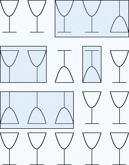
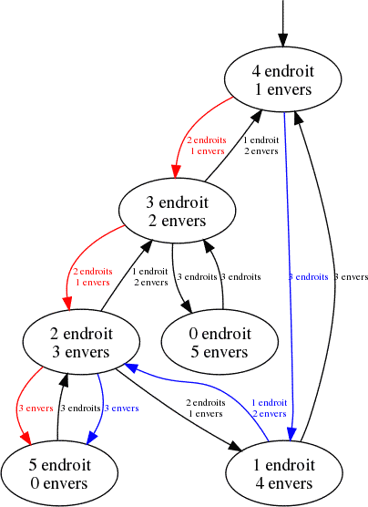

Cinq verres vides sont posés sur une table : quatre sont à l'endroit et un est à l'envers. En un tour de jeu, vous pouvez désigner exactement trois verres différents et retourner ces trois verres.
Votre objectif est de remettre tous les verres à l'endroit en un minimum de tours. Vous pouvez réessayer autant de fois que vous le souhaitez. Vous n'aurez des points que si vous trouvez le plus petit nombre de tours possible, et vous ne pouvez pas perdre de points sur cette question.
Nombre de tours minimum obtenu : ?
Nombre de tours pour cette tentative : ?
Il est possible de mettre tous les verres à l'endroit en 3 tours, et ce n'est pas possible de le faire en moins de tours. Voici par exemple une manière de faire :

Ce sujet soulève une question d'informatique très intéressante : comment pourrait-on programmer un ordinateur pour qu'il trouve une solution ? En allant plus loin, on pourrait même se demander comment s'y prendre pour être certain que le programme trouve la meilleure solution ?
Une manière naïve de faire consiste à essayer tous les mouvements possibles. On peut alors se rendre compte qu'il y a des situations symétriques. En fait, la seule chose qui compte pour décrire une situation, c'est le nombre de verres à l'endroit, puisque tous les verres sont identiques et que du nombre de verres à l'endroit on peut déduire le nombre de verres à l'envers.
Première étape
Au départ on a 4 verres à l'endroit. Les opérations possibles sont les suivantes.
Deuxième étape
Si on repart de la configuration avec 1 verre à l'endroit, alors les opérations possibles sont les suivantes.
Si on repart de la configuration avec 3 verres à l'endroit, alors les opérations possibles sont les suivantes.
Troisième étape
Si on repart de la configuration avec 0 verre à l'endroit, alors les opérations possibles sont les suivantes.
Si on repart de la configuration avec 2 verres à l'endroit, alors les opérations possibles sont les suivantes.
On a ainsi montré non seulement qu'on pouvait obtenir une configuration avec 5 verres à l'endroit en 3 étapes, mais on a également démontré qu'il n'était pas possible de faire moins.
Le principe général qui consiste à regarder l'ensemble des configurations que l'on peut atteindre à chaque étape s'appelle un parcours en largeur. Ce processus est assez fastidieux à faire à la main, mais les ordinateurs sont justement très forts pour faire des tâches fastidieuses !
Une observation utile est que l'ordre des verres sur la table n'a pas d'importance, et que seul le nombre de verres à l'endroit ou à l'envers compte. On peut alors construire un graphe orienté avec pour sommets les six combinaisons possibles de cinq verres, et des arêtes correspondant au retournement de trois verres :
On peut alors reformuler le but du sujet sous la question suivante : quel est le chemin le plus court joignant le sommet (4,1) au sommet (5,0) ? Il existe deux chemins de longueur minimale (3 tours). Ils sont illustrés en rouge et en bleu sur le dessin.